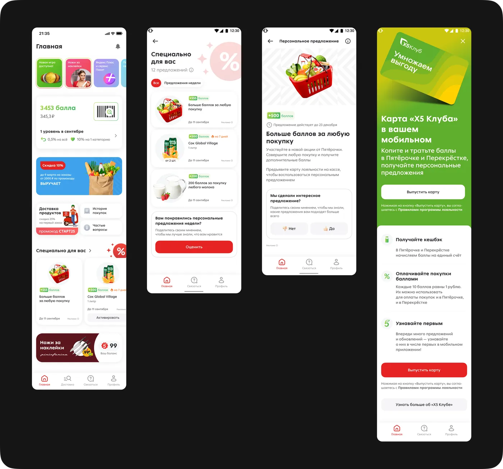
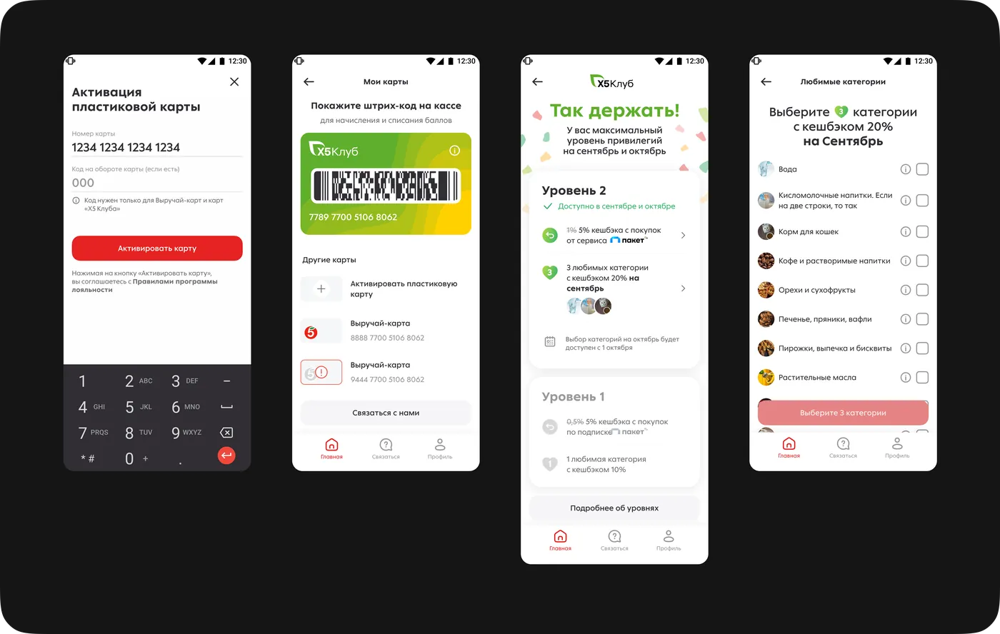

Проектировала сценарии программы лояльности в приложении «Пятёрочки»: баллы, карта, активация, персональные предложения, сторис. Добавила новые фичи для X5 Club, что увеличило средний чек на 8%.
В рамках перезапуска приложения «Пятёрочка» (MAU 10 млн) спроектировала систему лояльности целиком: начисление и списание баллов, карту участника, сценарий активации, персональные предложения и формат сторис для коммуникации акций. Добавила новые фичи для программы X5 Club — они увеличили средний чек на 8%.
Параллельно проводила UX и A/B тесты совместно с UX-лабораторией и построила систему метрик на базе Google HEART, а также развивала дизайн-систему продукта в команде из четырёх дизайнеров.

